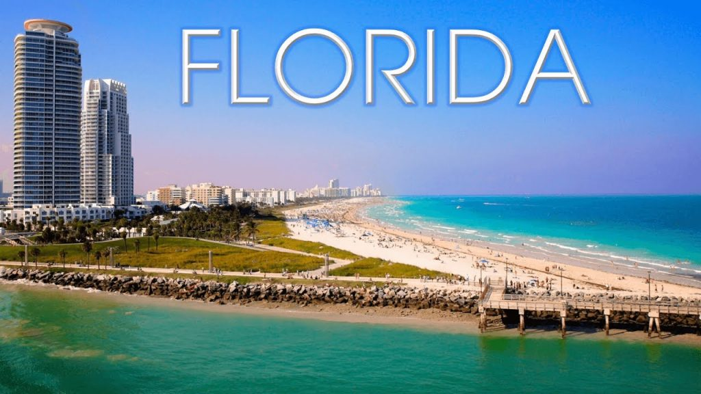

Estados Unidos
Estados Unidos es un país de 50 estados que ocupa una extensa franja de América del Norte, con Alaska en el noroeste y Hawái que extiende la presencia del país en el océano Pacífico. Entre las principales ciudades de la costa del Atlántico, se encuentran Nueva York, un centro global financiero y cultural, y la capital Washington D. C. Chicago, metrópolis del medio oeste, es famosa por su influencia arquitectónica y, en la costa oeste, Hollywood, Los Ángeles, es famosa por la industria cinematográfica.

Principales Centros turisticos
Florida
Florida es el estado ubicado más al sureste de los Estados Unidos, con el Atlántico a un lado y el golfo de México al otro. Tiene cientos de millas de playas. La ciudad de Miami es conocida por sus influencias culturales latinoamericanas y un destacado ambiente artístico, además de su ambiente nocturno, especialmente en la lujosa playa South Beach. Orlando es famoso por sus parques temáticos, incluido Walt Disney World.
Las Vegas
Las Vegas, en el desierto de Mojave de Nevada, es una ciudad turística famosa por su activa vida nocturna, que se centra en casinos abiertos las 24 horas del día y otras opciones de entretenimiento. Su calle principal y su núcleo es "The Strip", con un poco más de cuatro millas de extensión. Este bulevar alberga hoteles temáticos con elaboradas exhibiciones, como fuentes sincronizadas con la música o réplicas de una pirámide egipcia, el Gran Canal de Venecia y la Torre Eiffel

Ney York
Nueva York incluye 5 distritos que se ubican donde el río Hudson desemboca en el océano Atlántico. En su centro se encuentra Manhattan, un distrito densamente poblado que se encuentra entre los principales centros comerciales, financieros y culturales del mundo. Sus sitios icónicos incluyen rascacielos, como el Empire State Building, y el amplio Central Park. El teatro Broadway se ubica en la zona del Times Square iluminada con neones.
Nueva Orleans
Hermosa, vibrante, relajada y divertida, son algunos adjetivos que definen a Nueva Orleans, al sureste de Luisiana. Es una ciudad con herencia francesa y española con acentuados rasgos afroamericanos, que expresa el multiculturalismo estadounidense en la arquitectura, música y gastronomía. Nueva Orleans es una maravillosa rareza de Estados Unidos desde que el presidente Thomas Jefferson la compró a Napoleón Bonaparte por 15 millones de dólares. Sumergirse en su barrio francés es retroceder al siglo XVIII mientras se disfruta de los distintivos culturales añadidos a lo largo de los siglos XIX y XX, que hacen de esta ciudad la más ecléctica del país.
Chicago
Con un buen clima, Chicago, la “ciudad de los vientos”, es probablemente la mejor de los Estados Unidos. Su propuesta gastronómica es de primer nivel con restaurantes y menús de todo el mundo. Igualmente en el arte y cultura, lo que convierte a Chicago en el eje de la manifestación de la genialidad humana. El Museo Field de Historia Natural es uno de los más grandes del mundo en su tipo, albergando más de 20 millones de objetos naturales y culturales. Su colección de fósiles que incluye a Sue, el tiranosaurio más completo que la ciencia ha hallado, es uno de sus máximas atracciones. Al igual que Memphis, Chicago goza de una rica vida musical e influyente. Allí se escuchan a Los Chicago Blues, el Gospel, el jazz, el Chicago Soul, el hip-hop y la encumbrada orquesta sinfónica de la ciudad.
Gran Cañon
Es difícil describir con palabras lo impresionante que es el Gran Cañón. Sus dimensiones básicas son sobrecogedoras: una longitud de más de 440 km y abismos escalofriantes que superan los 1.600 m La mejor manera de apreciar esta obra de la naturaleza es bajando hasta el cauce del río Colorado, la corriente de agua que esculpió la garganta en un milenario trabajo erosivo. Caminatas, paseos en mula, excursionismo y descenso de ríos, son algunas de las actividades recreativas que ofrecen sus operadores turísticos. Una experiencia imperdible y que muchos no pueden superar, es caminar por el Skywalk, una pasarela con piso de vidrio sobre 1.200 m de altura. ¡Una locura
Washington
La capital. Aunque tiene menos de 700 mil habitantes, solo es superada en diversidad étnica y gastronómica por Nueva York. Por ser una ciudad política, de embajadores y de altos funcionarios del gobierno, tiene servicios de primera calidad para residentes y turistas. Aparte de la Casa Blanca y el Capitolio Nacional, dos símbolos arquitectónicos capitalinos, todos los turistas visitan el Monumento a Washington con su gran obelisco de 170 m de altura, el Monumento Conmemorativo de la Guerra Civil y la basílica de la Inmaculada Concepción. No dejes de visitar el Instituto Smithsoniano que suma hermosos museos, uno de ellos, el de Historia Natural con más de 125 millones de especies y objetos. El campus de la Universidad de Georgetown es de serena belleza, precedido por el Healy Hall, un majestuoso edificio que mezcla armoniosamente los estilos románico y barroco.
Península de Massachusetts
Cape Cop. Larga península de Massachusetts ideal para pasar días de playa en familia, con excelentes hoteles y deliciosa comida marinera. A lo largo de la península se alinean pintorescas localidades como Bourne, Falmouth, Mashpee, Dennis, Brewster, Chatham, Eastham, Truro y Provincetown, con espacios salpicados por bonitos molinos de viento. Las islas más frecuentadas son Nantucket y Martha’s Vineyard, muy visitadas en verano por los vacacionistas que llegan desde Nueva Inglaterra y otras partes del país.
Kansas city
El jugoso y delicioso filete de Kansas es el corte de carne más famoso de Estados Unidos y los citadinos lo preparan de forma inigualable en sus numerosos sitios de barbacoas. La ciudad que se extiende en el área donde confluyen los ríos Misuri se ha convertido en un prestigioso territorio del jazz, con clubes que ofrecen música en vivo durante toda la semana. Haz un picnic en el grandioso y de entrada libre jardín de esculturas del Museo Nelson-Atkins. El Museo Nacional de la Primera Guerra Mundial exhibe armas, objetos sacados de las propias trincheras europeas, vehículos, uniformes y otras piezas utilizadas durante la sangrienta y brutal Gran Guerra. Otra cosa que te encantará de la ciudad de Kansas es el “First Friday”, evento cultural del distrito Crossroads que el primer viernes de cada mes combina arte y gastronomía. Los aficionados al béisbol no pueden dejar de recorrer el Museo de las Ligas Negras.
Parque Nacional Yellowstone
El parque nacional más antiguo del mundo. Es la enorme caldera del volcán más grande del continente americano, un monstruo que de hacer erupción podría borrar del mapa la vida en el planeta. Pese a que suma 640 mil años sin erupciones, tiene suficiente actividad para deleitar con sus espectaculares géiseres y demás fenómenos geotérmicos, a sus centenares de visitantes. El principal géiser, de entre los más de 500 que se forman en el parque, es el fascinante Old Faithful que se manifiesta más o menos cada hora expulsando agua a 93 °C a 40 metros de altura. Los aficionados al senderismo y a la observación de la vida silvestre cuentan en Yellowstone con Lamar Valley, magnífico lugar para acampar con las montañas como centinelas. El Lago Yellowstone está repleto de truchas y el Gran Cañón de Yellowstone ofrece el atractivo de sus acantilados y hermosas cascadas